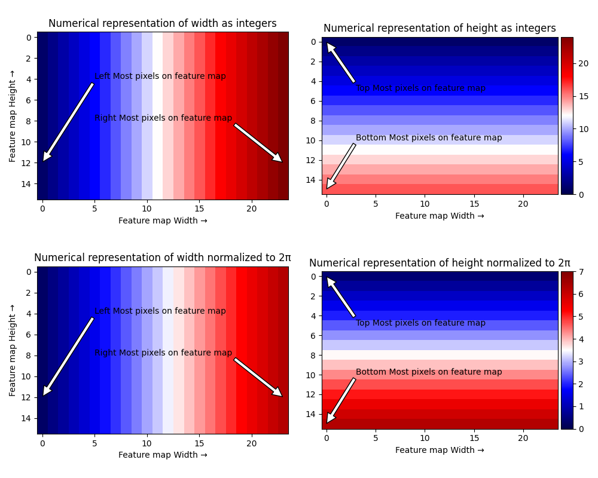
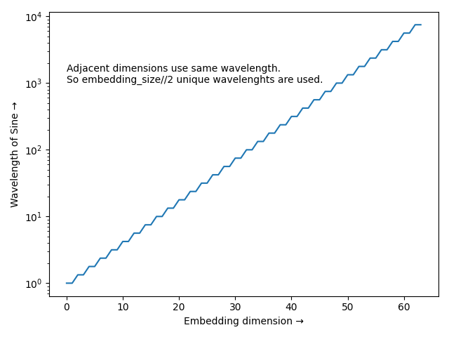
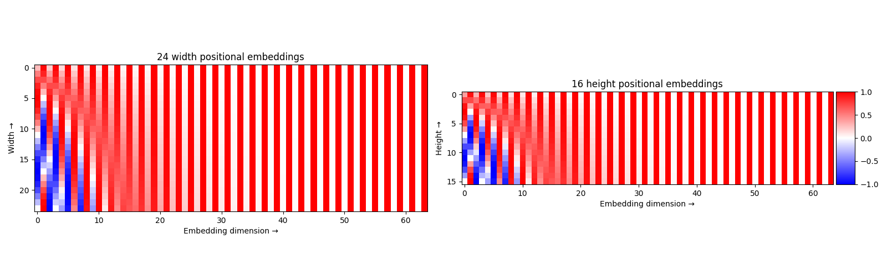

if isinstance(samples, (list, torch.Tensor)):
samples = nested_tensor_from_tensor_list(samples)End to End Object Detection with Transformers(DeTr)
Code Walkthrough
Introduction
The evolution CNNs from classifiers to object detectors (CNN -> RCNN -> Fast-RCNN -> Faster-RCNN ….) is very interesting and rightly has a lot of articles written on it. If you are looking to read on this topic, I suggest you check this series post1, post2, post3, post4.
The transformer is another architecture that has a similar story. The adaptation of transformers from NLP to vision and vision + language tasks is very interesting. Today transformer-based architectures can solve various vision tasks like object detection(Carion et al. 2020), Human-Object Interaction Detection(Tamura, Ohashi, and Yoshinaga 2021), tracking(Zeng et al. 2022) etc. In this post, I go over one such adaptation of the transformer for object detection(DeTr) from (Carion et al. 2020), code open sourced.
There is a lot of content covering DeTr(yannic, HuggingFace). In this post, I go over a few parts of the implementation provided by the authors, that I believe are essential to understanding and adapting DeTr for different use cases. I assume the reader is familiar with object detection architectures and Transformers in general.
DeTr Overview
- DeTr uses a CNN to extract features from an input image.
- Then augments the feature map with positional embeddings to add 2d positional information.
- The feature map is passed to the transformer encoder.
- The transformer decoder takes the output of the encoder, object detection queries(learnt embeddings) and returns a result(embedding) for each query, that contains information about object location and class(including
no objectclass). - MLPs are used to extract object class and bounding box information from these embeddings.
How does one implement this in Pytorch? I go over the implementation provided by the authors. Going over the forward, and backward passes should give enough knowledge to understand and modify the implementation for specific use cases. Here I cover the forward() method of DeTr class. Since the implementation is in Pytorch and DeTr class is an nn.Module, So forward() method dictates inference.
The questions someone familiar with object detection architectures and Transformers in general would have after reading about DeTr are.
- How to calculate 2d positional embeddings?
- How to structure modules to add positional embeddings to the feature map?
- How does a transformer which should expect a sequence of embeddings parse the 2d feature map from a CNN?
- How does the transformer decoder predict object locations and classes in the absence of anchor boxes?
- How does this compare to established object detection architecture like Faster-RCNN?
I try to cover the above details while going over the implementation of DeTr.
Implementation
- I’ll be using the official implementation from Facebook, located here.
Setup to Try the inference(optional).
Load Image
- I show one to load a single test image to try inference, there are many ways of doing it including using a Dataset for loading multiple images.
- Load an Image for examples using from PIL
img = Image.open("data/1.jpg"). - Convert the image into a tensor for consumption by
nn.Module.- This can be done by using
make_coco_transformsfrom datasets/coco.py. transforms = make_coco_transforms("val")andtensor = transforms(img)- The above steps resize the image, normalize it with ImageNet mean and std and convert the image to a tensor of shape (C x H x W).
- This can be done by using
Create the DeTr object
- There are many ways to create the DeTr object from this repo. I’ll show one of them, This way is not standard and only used for this experiment.
- Build the DeTr object using
build_modelfrommodels.py. build_modelhas a lot of arguments that configure the model, these include anywhere from backbone architecture to the learning rate. I will use the default configuration from the argument parser implemented in main.py.- Use
get_args_parserfrom main.py. get the default argumentsargs = get_args_parser().parse_args(""). - create DeTr
model, criterion, postprocessors = build_model(args). - You can modify the empty string I passed to
parse_args()to set DeTr to a non-default configuration.
Forward Pass
- We can start inference by calling the model with the image tensor.
op = model(img[None, :])- Here img is the image tensor of shape (C, H, W). we index it with [None, :] to add an extra dimension that signifies batch size(here it is 1). So the final shape of the input tensor is (BS, C, H, W).
- The above call results in a call to the forward method of the model object(DeTr) which is shown below.
detr/models/detr.py: 44
1. def forward(self, samples: NestedTensor):
2. if isinstance(samples, (list, torch.Tensor)):
3. samples = nested_tensor_from_tensor_list(samples)
4. features, pos = self.backbone(samples)
5.
6. src, mask = features[-1].decompose()
7. assert mask is not None
8. hs = self.transformer(self.input_proj(src), mask, self.query_embed.weight, pos[-1])[0]
9.
10. outputs_class = self.class_embed(hs)
11. outputs_coord = self.bbox_embed(hs).sigmoid()
12. out = {'pred_logits': outputs_class[-1], 'pred_boxes': outputs_coord[-1]}
13. if self.aux_loss:
14. out['aux_outputs'] = self._set_aux_loss(outputs_class, outputs_coord)
15. return out- I’ll go over the above function line by line and explain it.
Lines 2-3
- The modules in this repo are written to expect input of type
NestedTensor, but if we send in 4d tensor (BS, C, H, W) or a list of 3d tensors (C, H, W) they are first converted to NestTensors usingnested_tensor_from_tensor_list(). - It looks like this.
detr/util/misc.py: 307
1. def nested_tensor_from_tensor_list(tensor_list: List[Tensor]):
2. if tensor_list[0].ndim == 3:
3. if torchvision._is_tracing():
4. # nested_tensor_from_tensor_list() does not export well to ONNX
5. # call _onnx_nested_tensor_from_tensor_list() instead
6. return _onnx_nested_tensor_from_tensor_list(tensor_list)
7.
8. # TODO make it support different-sized images
9. max_size = _max_by_axis([list(img.shape) for img in tensor_list])
10. # min_size = tuple(min(s) for s in zip(*[img.shape for img in tensor_list]))
11. batch_shape = [len(tensor_list)] + max_size
12. b, c, h, w = batch_shape
13. dtype = tensor_list[0].dtype
14. device = tensor_list[0].device
15. tensor = torch.zeros(batch_shape, dtype=dtype, device=device)
16. mask = torch.ones((b, h, w), dtype=torch.bool, device=device)
17. for img, pad_img, m in zip(tensor_list, tensor, mask):
18. pad_img[: img.shape[0], : img.shape[1], : img.shape[2]].copy_(img)
19. m[: img.shape[1], :img.shape[2]] = False
20. else:
21. raise ValueError('not supported')
22. return NestedTensor(tensor, mask)if tensor_list[0].ndim == 3is a check to see if the images have 3 channels.if torchvision._is_tracing()is a check to see if tracing is running at the moment to export the model to ONNX format. exported ONNX model is used for inference or optimized further using Hardware specific SDK like TensoRT etc.- We need not go in-depth into this as our focus is on understanding DeTr.
- In the rest of the function we calculate the maximum of channels, width, and height of all the images in the batch.
- Then create a padded image of size (max_channels, max_height, max_width) for each image and copy the image data to the padded image.
- Since now we have created a padded image, we keep track of what part of this padded image has actual image content by creating a binary mask.
- Why do we need to do this?
- Even though the transformer can handle variable sequence lengths. we do this to make the length of all the sequences in a batch to be same.
- This is needed to take advantage of computation parallelism in accelerators like GPU, TPU, to some extent even a CPU these days.
- Since sequence length input to the transformer is determined by the image(will show this later) so we make all the images in the batch the same size.
- This is similar to padding in transformers. And the mask is similar to the padding mask in transformers, it is used to stop attention modules from attending to the pad embeddings.
- We use the image data tensor and mask tensor to create
NestedTensorobject, which is used as a container to store them. NestedTensor- A class representing objects containing two fields, tensors and masks to store the image tensors and masks we calculated above.
- supports methods [
to(),decompose()] and also implements dunder repr for printing. to(): as expected moves the fields of the object (tensors, fields) between the device and host processors i.e, GPU, and CPU respectively.decompose(): returns the fields as a tuple.
Line 4
features, pos = self.backbone(samples)- Now that data preparation is completed we begin inference and the first setup is to use the backbone for feature extraction.
- So we call the backbone with
NestedTensorwe created as the argument. - The backbone extracts features(BS, C, H, W) from the images. these features are then converted to a sequence of embeddings(BS, HW, C) and passed to the transformer to do object detection.
- Transformer handles the sequence as if it is a set, so it does not get the positional information that is required to perform object detection. to tackle this transformers in NLP use a positional embedding(usually super-imposed on word embeddings) that encodes the position of the word in a sentence. In DeTr the positional information is 2 dimensional i.e, Height and Width dimensions. DeTr does this by extending the 1d positional embedding from (Vaswani et al. 2017) to two dimensions.
- Positional embedding calculation is also part of the backbone in DeTr.
- Backbone is of type
Joiner.Joineris annn.Sequentialmodule that contains the actual backbone(CNN) and a positional_embedding module.nn.Sequentialbasically calls thenn.Modulesin the order they are passed to it.- So we first infer CNN followed by positional_embedding module on CNN output.
Backbone - CNN
- How does CNN inference work in DeTr?
- We can choose any of the resnet models as the backbone.
- Chosen resnet model is loaded from
torchvision.modelswith pre-trained weights and batchnorm set totorchvision.ops.FrozenBatchNorm2d. - In fine-tuning and inference BatchNorm is usually frozen, The logic behind freezing batchnorm for fine-tuning is that the batch statistics on fine-tuning dataset can be different from that of pre-trained dataset. And not freezing the batchnorm will cause the layer to learn the new statistics which means the rest of the layers now have to adapt to new statistics. so all the weights have to change significantly. Since the fine-tuning dataset is usually small compared to the pre-trained dataset trying to learn all the weights again will not result in a good model compared to freezing the batchnorm and nudging the weights a little with smaller learning rates. In practice, this should hold as long as both the fine-tuning and pre-trained datasets are reasonably similar.
- Resnet models are classifiers, they have a CNN backbone that returns the feature map (BS, C, H, W), followed by pooling and MLPs for classification.
- We only need the output of CNN, If the DeTr is performing object detection we collect the output of layer4 from the CNN.
- That is if DeTr is performing instance segmentation we collect the output of layer1 to layer4 of resnet.
- This output selection can be performed using
torchvision.models._utils.IntermediateLayerGetterWhich is a module wrapper that lets us collect intermediate layer outputs. It makes some assumptions about the module it is wrapping. refer docstring here for details. - Usage looks like
IntermediateLayerGetter(backbone, return_layers={'layer4': "0"})orIntermediateLayerGetter(backbone, return_layers={"layer1": "0", "layer2": "1", "layer3": "2", "layer4": "3"}) - CNN takes the image tensor of shape (BS, C, H, W) and returns a feature map of shape (BS, C1, H1, W1) where C1 > C, H1 < H, W1 < W.
- The mask using which we are keeping track of the location of image content in the padded image tensor also needs to be resized to indicate the region in the feature map that is related to the image content of the padded image tensor.
- This is done by creating a new
nn.ModuleBackbone and using it to do the resize of mask operation after CNN inference. The implementation is linked below.
detr/models/backbone.py: 72
1. def forward(self, tensor_list: NestedTensor):
2. xs = self.body(tensor_list.tensors) # CNN inference
3. out: Dict[str, NestedTensor] = {}
4. for name, x in xs.items():
5. m = tensor_list.mask
6. assert m is not None
7. mask = F.interpolate(m[None].float(), size=x.shape[-2:]).to(torch.bool)[0] # Mask Resize
8. out[name] = NestedTensor(x, mask)
9. return out- The resize is done using
torch.nn.functional.interpolate.
Backbone - Positional Embedding
- The next step is to calculate the positional embedding to capture the 2d positional information of the feature map. This is done as shown below.
detr/models/position_encoding.py: 28
1. def forward(self, tensor_list: NestedTensor):
2. x = tensor_list.tensors
3. mask = tensor_list.mask
4. assert mask is not None
5. not_mask = ~mask
6. y_embed = not_mask.cumsum(1, dtype=torch.float32)
7. x_embed = not_mask.cumsum(2, dtype=torch.float32)
8. if self.normalize:
9. eps = 1e-6
10. y_embed = y_embed / (y_embed[:, -1:, :] + eps) * self.scale
11. x_embed = x_embed / (x_embed[:, :, -1:] + eps) * self.scale
12.
13. dim_t = torch.arange(self.num_pos_feats, dtype=torch.float32, device=x.device)
14. dim_t = self.temperature ** (2 * (dim_t // 2) / self.num_pos_feats)
15.
16. pos_x = x_embed[:, :, :, None] / dim_t
17. pos_y = y_embed[:, :, :, None] / dim_t
18. pos_x = torch.stack((pos_x[:, :, :, 0::2].sin(), pos_x[:, :, :, 1::2].cos()), dim=4).flatten(3)
19. pos_y = torch.stack((pos_y[:, :, :, 0::2].sin(), pos_y[:, :, :, 1::2].cos()), dim=4).flatten(3)
20. pos = torch.cat((pos_y, pos_x), dim=3).permute(0, 3, 1, 2)
21. return pos- (Vaswani et al. 2017) experiments with learned positional embeddings and sinusoidal embeddings. we will discuss 2d sinusoidal embedding. Learned 2d embedding is straightforward it is learnt, and involves no specific engineering or tricks.
- Height, Width sinusoidal positional vectors are half the size of transformer embeddings. so that both concatenated(pos embedding) would be the size of the transformer embeddings.
- position embedding is then superimposed on input embeddings of the transformer encoder.
- I’ll show the results of the above function on a feature map of width 24 and height 16.
- The implementation uses x, and y terminology instead of width and height. here x is along the width and y is along the height dimension.
- In lines 5-7 we calculate x_embed and y_embed, these are mappings of each pixel location on the feature map to integers representing x, and y locations respectively.
- In Lines 8-11 we normalize these locations to integer maps so that the largest width and height are represented by 2\(\pi\). The below visualization shows the integer and normalized representations of height and width.

- I’ll use a 128-dimensional positional embedding. This implies that x and y positional embeddings are of 64 dimensions each.
- (Vaswani et al. 2017) defines sinusoidal embeddings as follows.
- \(\Large PE_{(pos,2i)} = sin(pos/10000^{\frac{2i}{d_{model}}})\)
- \(\Large PE_{(pos,2i+1)} = cos(pos/10000^{\frac{2i}{d_{model}}})\)
- As the dimension of the embedding increases the wavelength of sin and cos increases. the last dimension satisfies \(2i = d_{model}\) so the wavelength becomes 10000 times larger i.e, the last dimension changes very little between consecutive positions.
- Lines 13-14 calculate this wavelength. The below visualization shows the wavelengths for each embedding dimension.

- Sinusoidal embeddings has the property that any \(PE_{pos+k}\) can be represented as a linear function of \(PE_{pos}\) this lets the transformer attend by relative positions.
- Finally in lines 16-19 we calculate the x, and y positional embeddings. The below visualization shows these embeddings.

- In line 20 we concatenate x, and y positional embeddings of 64 dimensions each to create the 2d positional embedding of 128 dimensions.
- This concludes CNN feature extraction and positional embedding calculation.
Line 8
hs = self.transformer(self.input_proj(src), mask, self.query_embed.weight, pos[-1])[0]- We further reduce the number of channels in the feature map output from CNN to match the embedding size of the transformer. This is done by
self.input_projWhich is a singlenn.Conv2dlayer with a convolutional kernel size of (1,1). The feature map output from input_proj of shape (BS, C, H, W) is passed to the transformer. - Transformer parses feature map into a sequence of embeddings of shape (BS, HW, C) which can be interpreted as a BS-sized batch of HW number of embeddings, each of size C.
- Mask we calculated of shape (BS, H, W) is interpreted as a mask of shape (BS, HW). This is similar to the padding mask in NLP indicating pad tokens. here mask indicates the padding added to the image.
- Positional embedding of shape (BS, C, H, W) is passed to the transformer. This is also interpreted as (BS, HW, C) positional embedding sequence and superimposed on input embeddings.
- This concluded all the input required for the transformer encoder, But the transformer decoder needs query input, DeTr learns these query embeddings and calls them object query embeddings. The number of object query embeddings is fixed during training and this determines the maximum number of objects the architecture can predict.
- These object queries are typically very small compared to the number of anchors used in FRCNN-like architectures.
- Transformer decoder returns one result embedding for each query embedding then we use MLPs to calculate the bounding box location and object class from the result embedding.
- So the query embeddings effectively act as a replacement for anchor boxes and DeTr predicts a set of objects available in the image.
Comparision with Faster-RCNN
- FRCNN and DeTr both have a CNN backbone to extract features from images to be used for object detection.
- FRCNN optionally has a Feature Pyramidal Network(FPN) to combine the syntactic featuers from shallow levels(Resnet.layer1) with symantic features from deeper levels(Resnet.layer4). DeTr does not have an FPN, But Deformable DeTr proposed by (Zhu et al. 2020) introduces an FPN layer.
- FRCNN then has a Region Proposal Network(RPN) that predicts objectness for each anchor indicating the presence of an object in the anchor region. DeTr does not do this and predicts objects in a single stage.
- FRCNN then has a Region Of Interest(ROI) Module that uses object predictions from RPN to collect the features related to each RPN object prediction from the output of FPN/backbone and predict the bounding box and object class. The bounding box is predicted relative to the anchor in this case. We use anchor location to estimate the location of the object in the image. These predictions are further post-processed through Non Maximum Suppression(NMS) to remove duplicates.
- DeTr on the other hand directly uses learned object queries. Each object query predicts an object in the image including no-object. the predicted objects are unique. This is done by training the network to predict unique objects through bipartite matching loss between GT and Object predictions.
References
Carion, Nicolas, Francisco Massa, Gabriel Synnaeve, Nicolas Usunier, Alexander Kirillov, and Sergey Zagoruyko. 2020. “End-to-End Object Detection with Transformers.” In European Conference on Computer Vision, 213–29. Springer.
Tamura, Masato, Hiroki Ohashi, and Tomoaki Yoshinaga. 2021. “Qpic: Query-Based Pairwise Human-Object Interaction Detection with Image-Wide Contextual Information.” In Proceedings of the IEEE/CVF Conference on Computer Vision and Pattern Recognition, 10410–19.
Vaswani, Ashish, Noam Shazeer, Niki Parmar, Jakob Uszkoreit, Llion Jones, Aidan N Gomez, Łukasz Kaiser, and Illia Polosukhin. 2017. “Attention Is All You Need.” Advances in Neural Information Processing Systems 30.
Zeng, Fangao, Bin Dong, Yuang Zhang, Tiancai Wang, Xiangyu Zhang, and Yichen Wei. 2022. “Motr: End-to-End Multiple-Object Tracking with Transformer.” In European Conference on Computer Vision, 659–75. Springer.
Zhu, Xizhou, Weijie Su, Lewei Lu, Bin Li, Xiaogang Wang, and Jifeng Dai. 2020. “Deformable Detr: Deformable Transformers for End-to-End Object Detection.” arXiv Preprint arXiv:2010.04159.